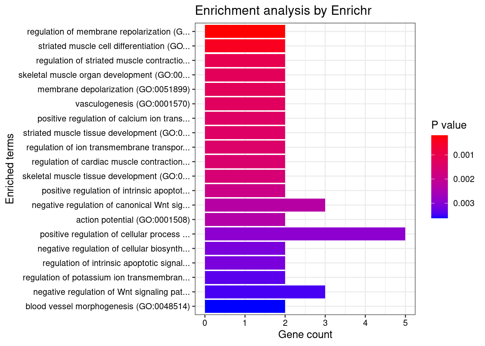
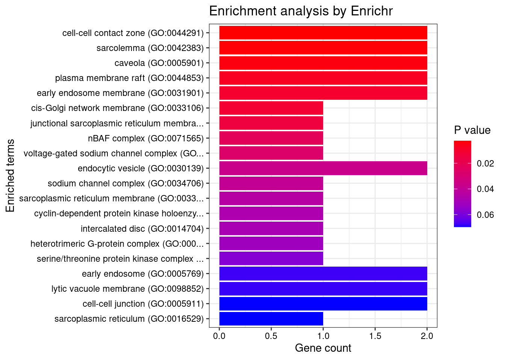
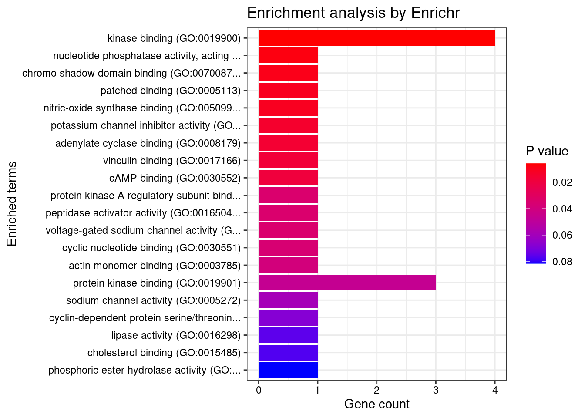

Last updated: 2021-12-22
Checks: 6 1
Knit directory: cTWAS_analysis/
This reproducible R Markdown analysis was created with workflowr (version 1.6.2). The Checks tab describes the reproducibility checks that were applied when the results were created. The Past versions tab lists the development history.
Great! Since the R Markdown file has been committed to the Git repository, you know the exact version of the code that produced these results.
Great job! The global environment was empty. Objects defined in the global environment can affect the analysis in your R Markdown file in unknown ways. For reproduciblity it’s best to always run the code in an empty environment.
The command set.seed(20211220) was run prior to running the code in the R Markdown file. Setting a seed ensures that any results that rely on randomness, e.g. subsampling or permutations, are reproducible.
Great job! Recording the operating system, R version, and package versions is critical for reproducibility.
Nice! There were no cached chunks for this analysis, so you can be confident that you successfully produced the results during this run.
Using absolute paths to the files within your workflowr project makes it difficult for you and others to run your code on a different machine. Change the absolute path(s) below to the suggested relative path(s) to make your code more reproducible.
| absolute | relative |
|---|---|
| /project2/xinhe/shengqian/cTWAS/cTWAS_analysis/data/ | data |
| /project2/xinhe/shengqian/cTWAS/cTWAS_analysis/code/ctwas_config.R | code/ctwas_config.R |
Great! You are using Git for version control. Tracking code development and connecting the code version to the results is critical for reproducibility.
The results in this page were generated with repository version 374327b. See the Past versions tab to see a history of the changes made to the R Markdown and HTML files.
Note that you need to be careful to ensure that all relevant files for the analysis have been committed to Git prior to generating the results (you can use wflow_publish or wflow_git_commit). workflowr only checks the R Markdown file, but you know if there are other scripts or data files that it depends on. Below is the status of the Git repository when the results were generated:
Untracked files:
Untracked: code/ctwas_config.R
Untracked: code/run_AF_analysis.sbatch
Untracked: code/run_AF_analysis.sh
Untracked: code/run_AF_ctwas_rss_LDR.R
Untracked: data/AF/
Untracked: data/mashr_Heart_Atrial_Appendage.db
Untracked: data/summary_known_genes_annotations.xlsx
Note that any generated files, e.g. HTML, png, CSS, etc., are not included in this status report because it is ok for generated content to have uncommitted changes.
These are the previous versions of the repository in which changes were made to the R Markdown (analysis/Atrial_Fibrillation_Heart_Atrial_Appendage.Rmd) and HTML (docs/Atrial_Fibrillation_Heart_Atrial_Appendage.html) files. If you’ve configured a remote Git repository (see ?wflow_git_remote), click on the hyperlinks in the table below to view the files as they were in that past version.
| File | Version | Author | Date | Message |
|---|---|---|---|---|
| Rmd | 374327b | sq-96 | 2021-12-22 | Start my new project |
| html | e22d0c9 | sq-96 | 2021-12-21 | Build site. |
| html | a8dbae0 | sq-96 | 2021-12-21 | Build site. |
| Rmd | 37c4593 | sq-96 | 2021-12-21 | publish files |
| html | e080e7b | sq-96 | 2021-12-20 | Build site. |
| Rmd | 0b4a886 | sq-96 | 2021-12-20 | Start my new project |
| html | 9b1bb6e | sq-96 | 2021-12-20 | Build site. |
| html | 773dcb5 | sq-96 | 2021-12-20 | Build site. |
| html | 3052d49 | sq-96 | 2021-12-20 | Build site. |
| Rmd | 12069cf | sq-96 | 2021-12-20 | Publish the files |
#GO enrichment analysis
library(enrichR)Welcome to enrichR
Checking connection ... Enrichr ... Connection is Live!
FlyEnrichr ... Connection is available!
WormEnrichr ... Connection is available!
YeastEnrichr ... Connection is available!
FishEnrichr ... Connection is available!dbs <- c("GO_Biological_Process_2021", "GO_Cellular_Component_2021", "GO_Molecular_Function_2021")
genes <- ctwas_gene_res$genename[ctwas_gene_res$susie_pip>0.8]
#number of genes for gene set enrichment
length(genes)[1] 32if (length(genes)>0){
GO_enrichment <- enrichr(genes, dbs)
for (db in dbs){
print(db)
df <- GO_enrichment[[db]]
print(plotEnrich(GO_enrichment[[db]]))
df <- df[df$Adjusted.P.value<0.05,c("Term", "Overlap", "Adjusted.P.value", "Genes")]
print(df)
}
#DisGeNET enrichment
# devtools::install_bitbucket("ibi_group/disgenet2r")
library(disgenet2r)
disgenet_api_key <- get_disgenet_api_key(
email = "wesleycrouse@gmail.com",
password = "uchicago1" )
Sys.setenv(DISGENET_API_KEY= disgenet_api_key)
res_enrich <-disease_enrichment(entities=genes, vocabulary = "HGNC",
database = "CURATED" )
df <- res_enrich@qresult[1:10, c("Description", "FDR", "Ratio", "BgRatio")]
print(df)
#WebGestalt enrichment
library(WebGestaltR)
background <- ctwas_gene_res$genename
#listGeneSet()
databases <- c("pathway_KEGG", "disease_GLAD4U", "disease_OMIM")
enrichResult <- WebGestaltR(enrichMethod="ORA", organism="hsapiens",
interestGene=genes, referenceGene=background,
enrichDatabase=databases, interestGeneType="genesymbol",
referenceGeneType="genesymbol", isOutput=F)
print(enrichResult[,c("description", "size", "overlap", "FDR", "database", "userId")])
}Uploading data to Enrichr... Done.
Querying GO_Biological_Process_2021... Done.
Querying GO_Cellular_Component_2021... Done.
Querying GO_Molecular_Function_2021... Done.
Parsing results... Done.
[1] "GO_Biological_Process_2021"
[1] Term Overlap Adjusted.P.value Genes
<0 rows> (or 0-length row.names)
[1] "GO_Cellular_Component_2021"
[1] Term Overlap Adjusted.P.value Genes
<0 rows> (or 0-length row.names)
[1] "GO_Molecular_Function_2021"[1] Term Overlap Adjusted.P.value Genes
<0 rows> (or 0-length row.names)AES gene(s) from the input list not found in DisGeNET CURATEDBOK gene(s) from the input list not found in DisGeNET CURATEDCMTM5 gene(s) from the input list not found in DisGeNET CURATEDJAM2 gene(s) from the input list not found in DisGeNET CURATEDRP11-325L7.2 gene(s) from the input list not found in DisGeNET CURATEDSTK11IP gene(s) from the input list not found in DisGeNET CURATEDLINC01629 gene(s) from the input list not found in DisGeNET CURATEDSP100 gene(s) from the input list not found in DisGeNET CURATEDDLEU1 gene(s) from the input list not found in DisGeNET CURATEDMURC gene(s) from the input list not found in DisGeNET CURATEDPOPDC3 gene(s) from the input list not found in DisGeNET CURATEDSEC23IP gene(s) from the input list not found in DisGeNET CURATEDAGAP5 gene(s) from the input list not found in DisGeNET CURATEDMARS gene(s) from the input list not found in DisGeNET CURATEDRP5-890E16.5 gene(s) from the input list not found in DisGeNET CURATED Description
5 Atrial Fibrillation
85 Paroxysmal atrial fibrillation
156 Persistent atrial fibrillation
171 familial atrial fibrillation
37 Cardiomegaly
130 Cardiac Hypertrophy
58 Congenital retrognathism
157 HYPOTHYROIDISM, CONGENITAL, NONGOITROUS, 5 (disorder)
158 Lipodystrophy, Congenital Generalized, Type 3
167 ATRIAL SEPTAL DEFECT 7 WITH OR WITHOUT ATRIOVENTRICULAR CONDUCTION DEFECTS
FDR Ratio BgRatio
5 7.915974e-11 9/17 160/9703
85 7.915974e-11 9/17 156/9703
156 7.915974e-11 9/17 156/9703
171 7.915974e-11 9/17 156/9703
37 1.217805e-02 3/17 82/9703
130 1.217805e-02 3/17 82/9703
58 1.467481e-02 1/17 1/9703
157 1.467481e-02 1/17 1/9703
158 1.467481e-02 1/17 1/9703
167 1.467481e-02 1/17 1/9703******************************************
* *
* Welcome to WebGestaltR ! *
* *
******************************************
Loading the functional categories...
Loading the ID list...
Loading the reference list...
Performing the enrichment analysis...
description size overlap FDR database
1 Isaacs Syndrome 55 5 0.001525439 disease_GLAD4U
2 Atrial Fibrillation 52 4 0.022003754 disease_GLAD4U
3 Atrioventricular block NOS 22 3 0.031360061 disease_GLAD4U
userId
1 SCN10A;GNB4;NKX2-5;CCND2;KLF12
2 PRRX1;SCN10A;NKX2-5;CAV1
3 SCN10A;NKX2-5;POPDC3
sessionInfo()R version 3.6.1 (2019-07-05)
Platform: x86_64-pc-linux-gnu (64-bit)
Running under: Scientific Linux 7.4 (Nitrogen)
Matrix products: default
BLAS/LAPACK: /software/openblas-0.2.19-el7-x86_64/lib/libopenblas_haswellp-r0.2.19.so
locale:
[1] LC_CTYPE=en_US.UTF-8 LC_NUMERIC=C
[3] LC_TIME=en_US.UTF-8 LC_COLLATE=en_US.UTF-8
[5] LC_MONETARY=en_US.UTF-8 LC_MESSAGES=en_US.UTF-8
[7] LC_PAPER=en_US.UTF-8 LC_NAME=C
[9] LC_ADDRESS=C LC_TELEPHONE=C
[11] LC_MEASUREMENT=en_US.UTF-8 LC_IDENTIFICATION=C
attached base packages:
[1] stats graphics grDevices utils datasets methods base
other attached packages:
[1] WebGestaltR_0.4.4 disgenet2r_0.99.2 enrichR_3.0 workflowr_1.6.2
loaded via a namespace (and not attached):
[1] Rcpp_1.0.7 svglite_1.2.2 lattice_0.20-38 assertthat_0.2.1
[5] rprojroot_2.0.2 digest_0.6.29 foreach_1.5.1 utf8_1.2.2
[9] R6_2.5.1 plyr_1.8.6 RSQLite_2.2.8 evaluate_0.14
[13] httr_1.4.2 ggplot2_3.3.5 highr_0.9 pillar_1.6.4
[17] gdtools_0.1.9 rlang_0.4.12 curl_4.3.2 data.table_1.14.2
[21] whisker_0.3-2 jquerylib_0.1.4 blob_1.2.2 Matrix_1.2-18
[25] rmarkdown_2.11 apcluster_1.4.8 labeling_0.4.2 readr_2.1.1
[29] stringr_1.4.0 igraph_1.2.10 bit_4.0.4 munsell_0.5.0
[33] compiler_3.6.1 httpuv_1.5.1 xfun_0.29 pkgconfig_2.0.3
[37] htmltools_0.5.2 tidyselect_1.1.1 tibble_3.1.6 codetools_0.2-16
[41] fansi_0.5.0 withr_2.4.3 tzdb_0.2.0 crayon_1.4.2
[45] dplyr_1.0.7 later_0.8.0 grid_3.6.1 jsonlite_1.7.2
[49] gtable_0.3.0 lifecycle_1.0.1 DBI_1.1.1 git2r_0.26.1
[53] magrittr_2.0.1 scales_1.1.1 vroom_1.5.7 stringi_1.7.6
[57] cachem_1.0.6 farver_2.1.0 reshape2_1.4.4 doRNG_1.8.2
[61] fs_1.5.2 promises_1.0.1 doParallel_1.0.16 ellipsis_0.3.2
[65] generics_0.1.1 vctrs_0.3.8 rjson_0.2.20 iterators_1.0.13
[69] tools_3.6.1 bit64_4.0.5 glue_1.5.1 purrr_0.3.4
[73] hms_1.1.1 rngtools_1.5.2 parallel_3.6.1 fastmap_1.1.0
[77] yaml_2.2.1 colorspace_2.0-2 memoise_2.0.1 knitr_1.36